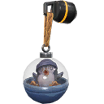

About Me
Hello there!
I am a Computer Engineering student at the University of Waterloo.
I have experience in software and hardware development through projects, as well as VEX Robotics experience, and I also enjoy self-learning new topics.
I'm currently in UW MedTech Robotics Design Team where I am working on autonomous software for a drowning prevention robot, and UW Formula Electric where I am developing firmware for its race car!
Outside of engineering, I enjoy watching sports (hockey, soccer, tennis), playing video games (Valorant), and snowboarding!

